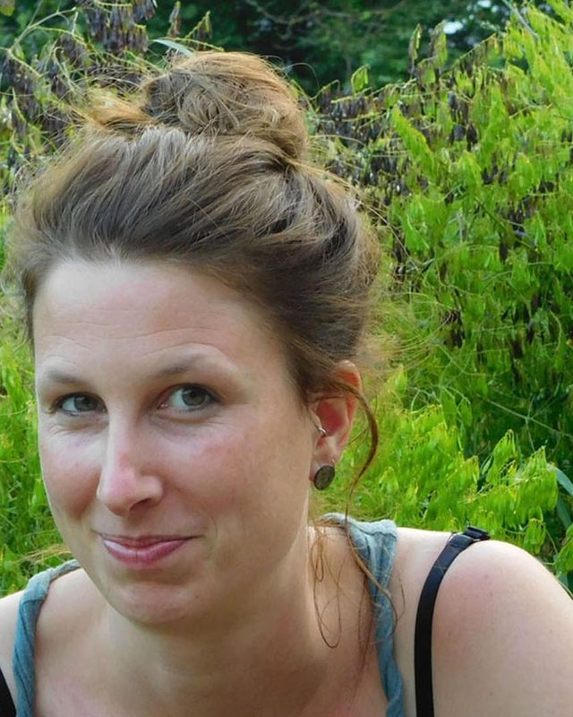
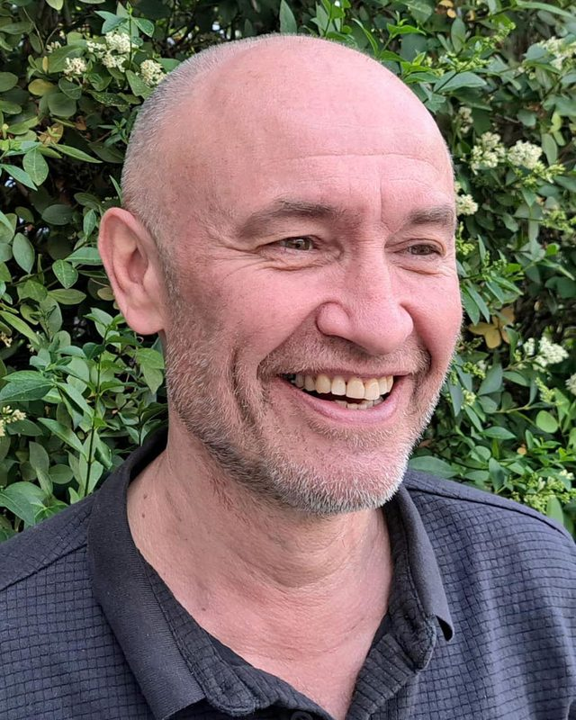
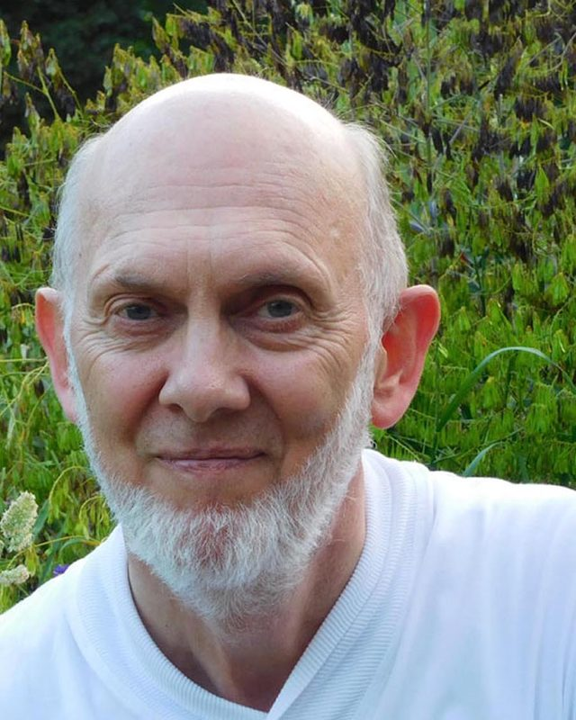
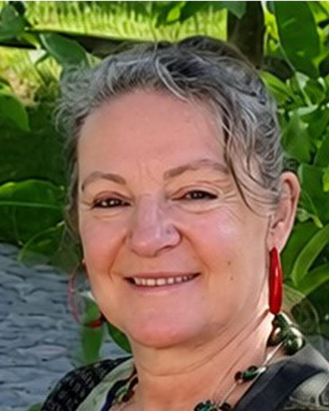

Wie zijn we?
Yoga Groepen Piet Meyvaert is een vzw, in 1980 opgericht door Piet Meyvaert. Sinds zijn overlijden in 2006 draagt de vereniging zijn naam.
Niet op je hoofd, maar op je beide voeten
YGPM volgt de traditionele yogaleer. Yoga is voor ons niet op je hoofd leren staan, maar op je beide voeten leren staan.
De yogahoudingen (asana’s) zijn geen doel op zich. Ze zijn het middel om door te dringen tot het wezen van yoga: de vereniging van de yogi met zijn wezenlijke staat van bestaan, bewustzijn en zaligheid.
Daarom gaat er in elke les veel aandacht naar de ademhaling, de verbinding tussen lichaam en geest. Het resultaat is een ontspannen lichaam en een ontspannen geest, voor jong en oud.
Onze lesgevers
Voor de lessen rekent YGPM op vijf ervaren lesgevers.

Griet Noels
Maandagavond
Ineke van Dam
Dinsdagavond, eerste les

Luc Bulckaert
Dinsdagavond, tweede les

Johan Schamps
Woensdag

Anne Logiest
Vrijdagochtend
Bestuur
- Anne MorezBestuurster
- Johan SchampsBestuurder
- Mariejeanne DirkxBestuurster
- Peter WillequetBestuurder
Kom een les proberen.
In september kun je een proefles volgen, zolang er plaats is. Die kost € 6, te betalen aan de lesgever. Schrijf je daarna in, dan vervalt dat bedrag.
Proefles aanvragen